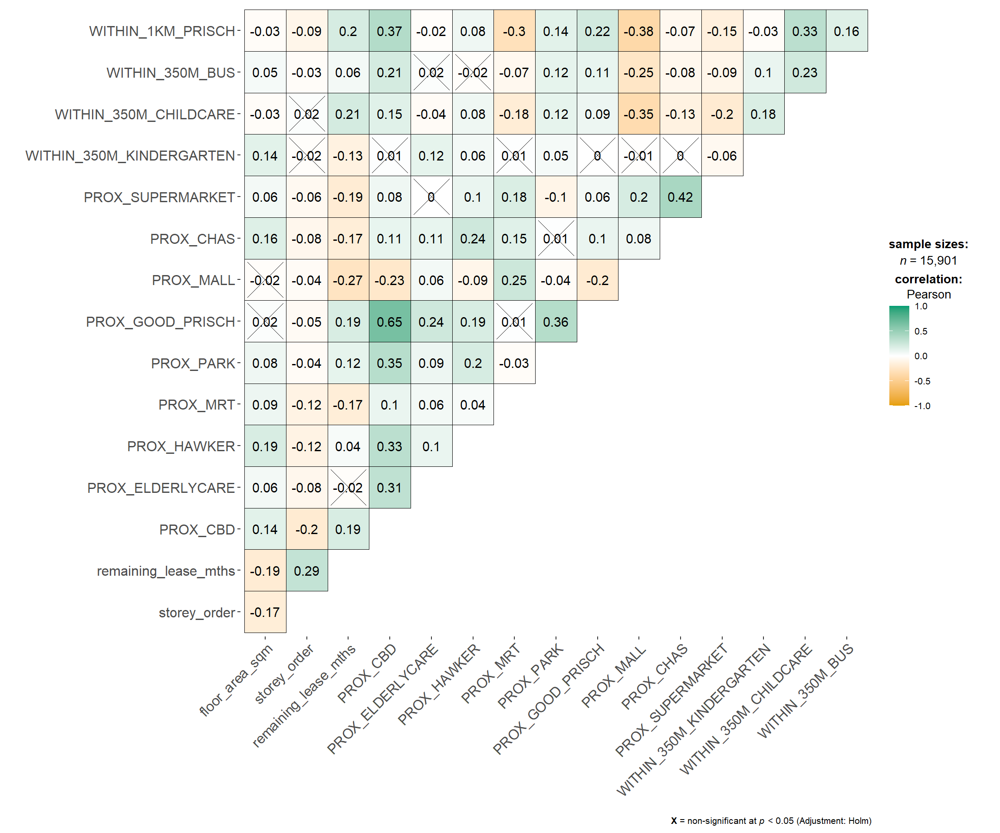
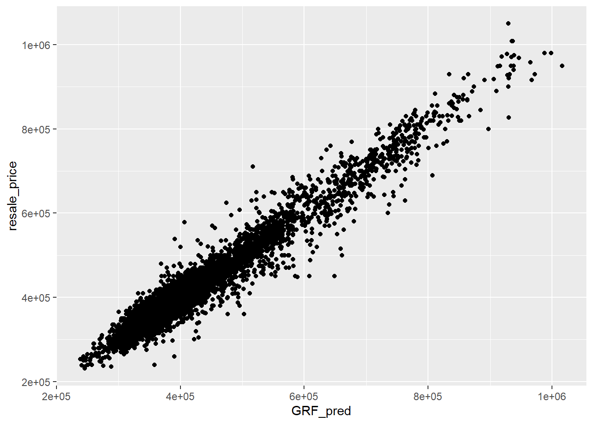

pacman::p_load(sf, spdep, GWmodel, SpatialML, tmap, rsample, Metrics, tidyverse, knitr,kableExtra)In-class Exercise 8
1 Install and Load R Packages
2 Prepare the Data
2.1 Read data file from rds
The below code chunk reads data from rds file and store in mdata as simple feature dataframe.
mdata <- read_rds("data/mdata.rds")2.2 Data Sampling
The data is split into train and test data sets with with size of 65% and 35% respectively using initial_split() of rsample package. rsample is one of the package from tidymodels.
set.seed(1234)
resale_split <- initial_split(mdata,
prop = 6.5/10,)
train_data <- training(resale_split)
test_data <- testing(resale_split)We write the data to rds format.
write_rds(train_data, "data/train_data.rds")
write_rds(test_data, "data/test_data.rds")Read the data from rds format.
train_data <- read_rds("data/train_data.rds")
test_data <- read_rds("data/test_data.rds")2.3 Multicollinearity Check
It is a good practice to use correlation matrix to examine if there is sign of multicollinearity before loading the predictors into a predictive model.
mdata_nogeo = mdata |>
st_drop_geometry()
ggstatsplot::ggcorrmat(mdata_nogeo[,2:17])
3 Build a non-sptial multiple linear regression
price_mlr <- lm(resale_price ~ floor_area_sqm +
storey_order + remaining_lease_mths +
PROX_CBD + PROX_ELDERLYCARE + PROX_HAWKER +
PROX_MRT + PROX_PARK + PROX_MALL +
PROX_SUPERMARKET + WITHIN_350M_KINDERGARTEN +
WITHIN_350M_CHILDCARE + WITHIN_350M_BUS +
WITHIN_1KM_PRISCH,
data=train_data)
olsrr::ols_regress(price_mlr) Model Summary
--------------------------------------------------------------------------
R 0.859 RMSE 61604.120
R-Squared 0.737 MSE 3800583670.022
Adj. R-Squared 0.737 Coef. Var 14.193
Pred R-Squared 0.737 AIC 257320.224
MAE 47485.556 SBC 257436.117
--------------------------------------------------------------------------
RMSE: Root Mean Square Error
MSE: Mean Square Error
MAE: Mean Absolute Error
AIC: Akaike Information Criteria
SBC: Schwarz Bayesian Criteria
ANOVA
--------------------------------------------------------------------------------
Sum of
Squares DF Mean Square F Sig.
--------------------------------------------------------------------------------
Regression 1.100899e+14 14 7.863561e+12 2069.04 0.0000
Residual 3.922202e+13 10320 3800583670.022
Total 1.493119e+14 10334
--------------------------------------------------------------------------------
Parameter Estimates
------------------------------------------------------------------------------------------------------------------
model Beta Std. Error Std. Beta t Sig lower upper
------------------------------------------------------------------------------------------------------------------
(Intercept) 107601.073 10601.261 10.150 0.000 86820.546 128381.599
floor_area_sqm 2780.698 90.579 0.164 30.699 0.000 2603.146 2958.251
storey_order 14299.298 339.115 0.234 42.167 0.000 13634.567 14964.029
remaining_lease_mths 344.490 4.592 0.442 75.027 0.000 335.489 353.490
PROX_CBD -16930.196 201.254 -0.586 -84.124 0.000 -17324.693 -16535.700
PROX_ELDERLYCARE -14441.025 994.867 -0.079 -14.516 0.000 -16391.157 -12490.893
PROX_HAWKER -19265.648 1273.597 -0.083 -15.127 0.000 -21762.144 -16769.151
PROX_MRT -32564.272 1744.232 -0.105 -18.670 0.000 -35983.305 -29145.240
PROX_PARK -5712.625 1483.885 -0.021 -3.850 0.000 -8621.328 -2803.922
PROX_MALL -14717.388 2007.818 -0.044 -7.330 0.000 -18653.100 -10781.675
PROX_SUPERMARKET -26881.938 4189.624 -0.035 -6.416 0.000 -35094.414 -18669.462
WITHIN_350M_KINDERGARTEN 8520.472 632.812 0.072 13.464 0.000 7280.038 9760.905
WITHIN_350M_CHILDCARE -4510.650 354.015 -0.074 -12.741 0.000 -5204.589 -3816.711
WITHIN_350M_BUS 813.493 222.574 0.020 3.655 0.000 377.205 1249.781
WITHIN_1KM_PRISCH -8010.834 491.512 -0.102 -16.298 0.000 -8974.293 -7047.376
------------------------------------------------------------------------------------------------------------------3.1 Multicollinearity check with VIF
3.1.1 VIF Table
vif = performance::check_collinearity(price_mlr)
kable(vif,
caption = "Variance Inflator Factor (VIF) Results") |>
kable_styling(font_size = 10)| Term | VIF | VIF_CI_low | VIF_CI_high | SE_factor | Tolerance | Tolerance_CI_low | Tolerance_CI_high |
|---|---|---|---|---|---|---|---|
| floor_area_sqm | 1.126308 | 1.104360 | 1.152871 | 1.061276 | 0.8878567 | 0.8673997 | 0.9055016 |
| storey_order | 1.206586 | 1.181102 | 1.235657 | 1.098447 | 0.8287846 | 0.8092862 | 0.8466672 |
| remaining_lease_mths | 1.363528 | 1.331762 | 1.398335 | 1.167702 | 0.7333919 | 0.7151363 | 0.7508850 |
| PROX_CBD | 1.905054 | 1.852553 | 1.960788 | 1.380237 | 0.5249196 | 0.5099991 | 0.5397957 |
| PROX_ELDERLYCARE | 1.178400 | 1.154108 | 1.206522 | 1.085541 | 0.8486080 | 0.8288284 | 0.8664703 |
| PROX_HAWKER | 1.187828 | 1.163132 | 1.216262 | 1.089875 | 0.8418729 | 0.8221915 | 0.8597474 |
| PROX_MRT | 1.240457 | 1.213579 | 1.270718 | 1.113758 | 0.8061545 | 0.7869568 | 0.8240092 |
| PROX_PARK | 1.195883 | 1.170847 | 1.224588 | 1.093564 | 0.8362021 | 0.8166011 | 0.8540825 |
| PROX_MALL | 1.409846 | 1.376277 | 1.446409 | 1.187369 | 0.7092975 | 0.6913675 | 0.7265978 |
| PROX_SUPERMARKET | 1.154751 | 1.131493 | 1.182124 | 1.074594 | 0.8659873 | 0.8459353 | 0.8837880 |
| WITHIN_350M_KINDERGARTEN | 1.125809 | 1.103886 | 1.152360 | 1.061042 | 0.8882499 | 0.8677846 | 0.9058910 |
| WITHIN_350M_CHILDCARE | 1.335594 | 1.304923 | 1.369351 | 1.155679 | 0.7487304 | 0.7302729 | 0.7663289 |
| WITHIN_350M_BUS | 1.148544 | 1.125564 | 1.175729 | 1.071701 | 0.8706679 | 0.8505364 | 0.8884435 |
| WITHIN_1KM_PRISCH | 1.550879 | 1.511876 | 1.592853 | 1.245343 | 0.6447958 | 0.6278044 | 0.6614298 |
3.1.2 VIF Plot
plot(vif) +
theme(axis.text.x = element_text(angle = 45, hjust = 1))Variable `Component` is not in your data frame :/4 Predective Modelling with MLR
4.1 Compute adaptive bandwidth
bw_adaptive <- bw.gwr(resale_price ~ floor_area_sqm +
storey_order + remaining_lease_mths +
PROX_CBD + PROX_ELDERLYCARE + PROX_HAWKER +
PROX_MRT + PROX_PARK + PROX_MALL +
PROX_SUPERMARKET + WITHIN_350M_KINDERGARTEN +
WITHIN_350M_CHILDCARE + WITHIN_350M_BUS +
WITHIN_1KM_PRISCH,
data=train_data,
approach="CV",
kernel="gaussian",
adaptive=TRUE,
longlat=FALSE)The result shows that 40 neighbour points is the optimal adaptive bandwidth to be used for this data set.
write_rds(bw_adaptive, "data/bw_adaptive.rds")4.2 Construct the adaptive bandwidth gwr model
First we call the save bandwidth using the code chunk below.
bw_adaptive <- read_rds("data/bw_adaptive.rds")Now, we go ahead to calibrate the gwr-based hedonic pricing model using adaptive bandwidth and Gaussian kernel as shown in the code chunk below.
gwr_adaptive <- gwr.basic(formula = resale_price ~
floor_area_sqm + storey_order +
remaining_lease_mths + PROX_CBD +
PROX_ELDERLYCARE + PROX_HAWKER +
PROX_MRT + PROX_PARK + PROX_MALL +
PROX_SUPERMARKET + WITHIN_350M_KINDERGARTEN +
WITHIN_350M_CHILDCARE + WITHIN_350M_BUS +
WITHIN_1KM_PRISCH,
data=train_data,
bw=bw_adaptive,
kernel = 'gaussian',
adaptive=TRUE,
longlat = FALSE)Next the model is saved in rds format for future use.
write_rds(gwr_adaptive, "data/gwr_adaptive.rds")4.3 Retrieve gwr output object
The code chunk below retrieves the save gwr model object.
gwr_adaptive <- read_rds("data/gwr_adaptive.rds")The model output can be displayed using below code.
gwr_adaptive ***********************************************************************
* Package GWmodel *
***********************************************************************
Program starts at: 2024-10-21 21:44:59.0768
Call:
gwr.basic(formula = resale_price ~ floor_area_sqm + storey_order +
remaining_lease_mths + PROX_CBD + PROX_ELDERLYCARE + PROX_HAWKER +
PROX_MRT + PROX_PARK + PROX_MALL + PROX_SUPERMARKET + WITHIN_350M_KINDERGARTEN +
WITHIN_350M_CHILDCARE + WITHIN_350M_BUS + WITHIN_1KM_PRISCH,
data = train_data, bw = bw_adaptive, kernel = "gaussian",
adaptive = TRUE, longlat = FALSE)
Dependent (y) variable: resale_price
Independent variables: floor_area_sqm storey_order remaining_lease_mths PROX_CBD PROX_ELDERLYCARE PROX_HAWKER PROX_MRT PROX_PARK PROX_MALL PROX_SUPERMARKET WITHIN_350M_KINDERGARTEN WITHIN_350M_CHILDCARE WITHIN_350M_BUS WITHIN_1KM_PRISCH
Number of data points: 10335
***********************************************************************
* Results of Global Regression *
***********************************************************************
Call:
lm(formula = formula, data = data)
Residuals:
Min 1Q Median 3Q Max
-205193 -39120 -1930 36545 472355
Coefficients:
Estimate Std. Error t value Pr(>|t|)
(Intercept) 107601.073 10601.261 10.150 < 2e-16 ***
floor_area_sqm 2780.698 90.579 30.699 < 2e-16 ***
storey_order 14299.298 339.115 42.167 < 2e-16 ***
remaining_lease_mths 344.490 4.592 75.027 < 2e-16 ***
PROX_CBD -16930.196 201.254 -84.124 < 2e-16 ***
PROX_ELDERLYCARE -14441.025 994.867 -14.516 < 2e-16 ***
PROX_HAWKER -19265.648 1273.597 -15.127 < 2e-16 ***
PROX_MRT -32564.272 1744.232 -18.670 < 2e-16 ***
PROX_PARK -5712.625 1483.885 -3.850 0.000119 ***
PROX_MALL -14717.388 2007.818 -7.330 2.47e-13 ***
PROX_SUPERMARKET -26881.938 4189.624 -6.416 1.46e-10 ***
WITHIN_350M_KINDERGARTEN 8520.472 632.812 13.464 < 2e-16 ***
WITHIN_350M_CHILDCARE -4510.650 354.015 -12.741 < 2e-16 ***
WITHIN_350M_BUS 813.493 222.574 3.655 0.000259 ***
WITHIN_1KM_PRISCH -8010.834 491.512 -16.298 < 2e-16 ***
---Significance stars
Signif. codes: 0 '***' 0.001 '**' 0.01 '*' 0.05 '.' 0.1 ' ' 1
Residual standard error: 61650 on 10320 degrees of freedom
Multiple R-squared: 0.7373
Adjusted R-squared: 0.737
F-statistic: 2069 on 14 and 10320 DF, p-value: < 2.2e-16
***Extra Diagnostic information
Residual sum of squares: 3.922202e+13
Sigma(hat): 61610.08
AIC: 257320.2
AICc: 257320.3
BIC: 247249
***********************************************************************
* Results of Geographically Weighted Regression *
***********************************************************************
*********************Model calibration information*********************
Kernel function: gaussian
Adaptive bandwidth: 40 (number of nearest neighbours)
Regression points: the same locations as observations are used.
Distance metric: Euclidean distance metric is used.
****************Summary of GWR coefficient estimates:******************
Min. 1st Qu. Median 3rd Qu.
Intercept -3.2478e+08 -4.7727e+05 -8.3004e+03 5.5025e+05
floor_area_sqm -2.8714e+04 1.4475e+03 2.3011e+03 3.3900e+03
storey_order 3.3186e+03 8.5899e+03 1.0826e+04 1.3397e+04
remaining_lease_mths -1.4431e+03 2.6063e+02 3.9048e+02 5.2865e+02
PROX_CBD -1.0837e+07 -5.7697e+04 -1.3787e+04 2.6552e+04
PROX_ELDERLYCARE -3.2195e+07 -4.0643e+04 1.0562e+04 6.1054e+04
PROX_HAWKER -2.3985e+08 -5.1365e+04 3.0026e+03 6.4287e+04
PROX_MRT -1.1632e+07 -1.0488e+05 -4.9373e+04 5.1037e+03
PROX_PARK -6.5961e+06 -4.8671e+04 -8.8128e+02 5.3498e+04
PROX_MALL -1.8112e+07 -7.4238e+04 -1.3982e+04 4.9779e+04
PROX_SUPERMARKET -4.5761e+06 -6.3461e+04 -1.7429e+04 3.5616e+04
WITHIN_350M_KINDERGARTEN -4.1823e+05 -6.0040e+03 9.0209e+01 4.7127e+03
WITHIN_350M_CHILDCARE -1.0273e+05 -2.2375e+03 2.6668e+02 2.6388e+03
WITHIN_350M_BUS -1.1757e+05 -1.4719e+03 1.1626e+02 1.7584e+03
WITHIN_1KM_PRISCH -6.6465e+05 -5.5959e+03 2.6916e+02 5.7500e+03
Max.
Intercept 1.6493e+08
floor_area_sqm 5.0907e+04
storey_order 2.9537e+04
remaining_lease_mths 1.8119e+03
PROX_CBD 2.2411e+07
PROX_ELDERLYCARE 8.2444e+07
PROX_HAWKER 5.9654e+06
PROX_MRT 2.0189e+08
PROX_PARK 1.5188e+07
PROX_MALL 1.0443e+07
PROX_SUPERMARKET 3.8330e+06
WITHIN_350M_KINDERGARTEN 6.6799e+05
WITHIN_350M_CHILDCARE 1.0802e+05
WITHIN_350M_BUS 3.7313e+04
WITHIN_1KM_PRISCH 5.0231e+05
************************Diagnostic information*************************
Number of data points: 10335
Effective number of parameters (2trace(S) - trace(S'S)): 1730.101
Effective degrees of freedom (n-2trace(S) + trace(S'S)): 8604.899
AICc (GWR book, Fotheringham, et al. 2002, p. 61, eq 2.33): 238871.9
AIC (GWR book, Fotheringham, et al. 2002,GWR p. 96, eq. 4.22): 237036.9
BIC (GWR book, Fotheringham, et al. 2002,GWR p. 61, eq. 2.34): 238209.1
Residual sum of squares: 4.829191e+12
R-square value: 0.967657
Adjusted R-square value: 0.9611534
***********************************************************************
Program stops at: 2024-10-21 21:46:26.519215 4.4 Predict with Test Data
gwr_pred <- gwr.predict(formula = resale_price ~
floor_area_sqm + storey_order +
remaining_lease_mths + PROX_CBD +
PROX_ELDERLYCARE + PROX_HAWKER +
PROX_MRT + PROX_PARK + PROX_MALL +
PROX_SUPERMARKET + WITHIN_350M_KINDERGARTEN +
WITHIN_350M_CHILDCARE + WITHIN_350M_BUS +
WITHIN_1KM_PRISCH,
data=train_data,
predictdata = test_data,
bw = bw_adaptive,
kernel = 'gaussian',
adaptive=TRUE,
longlat = FALSE)5 Predictive Modelling: SpatialML methods
5.1 Prepare Coordinates data
The code chunk below extracts the x,y coordinates of the full, training and test data sets.
coords <- st_coordinates(mdata)
coords_train <- st_coordinates(train_data)
coords_test <- st_coordinates(test_data)We write all the output into rds for future use.
coords_train <- write_rds(coords_train, "data/coords_train.rds" )
coords_test <- write_rds(coords_test, "data/coords_test.rds" )5.2 Drop Geometry field
First, we drop the geometry column of the sf data.frame using st_drop_geometry() of sf package as ranger() function require tible dataframe.
train_data_nogeom <- train_data %>%
st_drop_geometry()5.3 Calibrate Random Forest model
We calibrate a model to predict HDB resale price using random forest function of ranger package.
set.seed(1234)
rf <- ranger(resale_price ~ floor_area_sqm + storey_order +
remaining_lease_mths + PROX_CBD + PROX_ELDERLYCARE +
PROX_HAWKER + PROX_MRT + PROX_PARK + PROX_MALL +
PROX_SUPERMARKET + WITHIN_350M_KINDERGARTEN +
WITHIN_350M_CHILDCARE + WITHIN_350M_BUS +
WITHIN_1KM_PRISCH,
data=train_data_nogeom)write_rds(rf, "data/rf.rds")rf <- read_rds("data/rf.rds")
rfRanger result
Call:
ranger(resale_price ~ floor_area_sqm + storey_order + remaining_lease_mths + PROX_CBD + PROX_ELDERLYCARE + PROX_HAWKER + PROX_MRT + PROX_PARK + PROX_MALL + PROX_SUPERMARKET + WITHIN_350M_KINDERGARTEN + WITHIN_350M_CHILDCARE + WITHIN_350M_BUS + WITHIN_1KM_PRISCH, data = train_data_nogeom)
Type: Regression
Number of trees: 500
Sample size: 10335
Number of independent variables: 14
Mtry: 3
Target node size: 5
Variable importance mode: none
Splitrule: variance
OOB prediction error (MSE): 728602496
R squared (OOB): 0.9495728 5.4 Calibrate with grf()
In this section, we explore how to calibrate a model to predict HDB resale price by using grf() of SpatialML package.
set.seed(1234)
gwRF_adaptive <- grf(formula = resale_price ~ floor_area_sqm + storey_order +
remaining_lease_mths + PROX_CBD + PROX_ELDERLYCARE +
PROX_HAWKER + PROX_MRT + PROX_PARK + PROX_MALL +
PROX_SUPERMARKET + WITHIN_350M_KINDERGARTEN +
WITHIN_350M_CHILDCARE + WITHIN_350M_BUS +
WITHIN_1KM_PRISCH,
dframe=train_data_nogeom,
bw=55,
kernel="adaptive",
coords=coords_train)The model output is saved into rds format using the below code chunk.
write_rds(gwRF_adaptive, "data/gwRF_adaptive.rds")The below code chunk retrieves the saved model.
gwRF_adaptive <- read_rds("data/gwRF_adaptive.rds")5.5 Predict using the test data
5.5.1 Prepare the test data
The code chunk combines the test data with its corresponding coordinates data.
test_data_nogeom <- cbind(test_data, coords_test) %>%
st_drop_geometry()5.5.2 Predict with the test data
Next, predict.grf() of spatialML package is used to predict the resale value using the test data and gwRF_adaptive model calibrated earlier.
gwRF_pred <- predict.grf(gwRF_adaptive,
test_data_nogeom,
x.var.name="X",
y.var.name="Y",
local.w=1,
global.w=0)Before moving on, we save the output into rds file for future usage.
GRF_pred <- write_rds(gwRF_pred, "data/GRF_pred.rds")5.5.3 Convert the predicting output into a data frame
The output of the predict.grf() is a vector of predicted values. It is more efficient to convert it into a data frame for further visualisation and analysis.
GRF_pred <- read_rds("data/GRF_pred.rds")
GRF_pred_df <- as.data.frame(GRF_pred)Next cbind() is used to append the predicted values onto test_data.
test_data_p <- cbind(test_data, GRF_pred_df)write_rds(test_data_p, "data/test_data_p.rds")5.6 Visualiza the predicted values
ggplot(data = test_data_p,
aes(x = GRF_pred,
y = resale_price)) +
geom_point()
Plot in map form to see which area the model tends to overestimate/underestimate (how the errors distribute throughout the space).